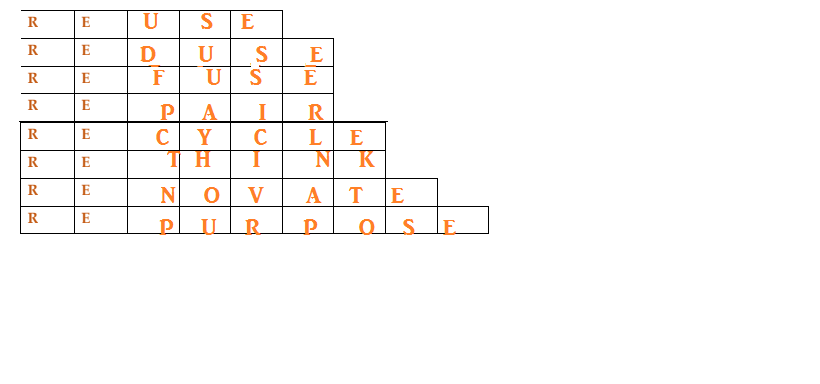
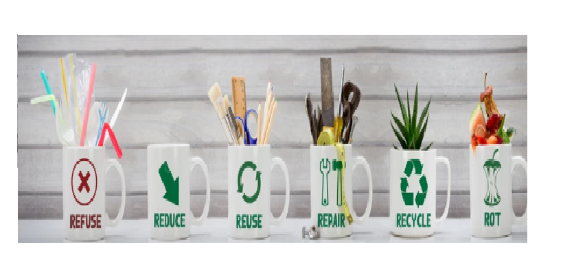

PREFIX "RE" WORK

Q) Represent symbolically the practices you and your family have started for this with these Rs.
Me and my family tried to :-
- Reduce the use of non-degredable items
- Recycling common household items that are not used
- Reusing degredable items like vegetable wastes , ETC
Q)Represent symbolically the practices what you and your family wishes to achieve this
year to help the environment.

Q)Represent symbolically the practices that you feel are important to protect the environment and why you cannot achieve them now.
Our Mother Earth is currently facing a lot of environmental concerns like global warming, acid rain, air pollution, urban sprawl, waste disposal, ozone layer depletion, water pollution, climate change and many more affect every human, animal, and nation on this planet.
We can protect our environment by :-
- Forest conservation
- Soil conservation
- Managing waste
- Recycling
- Reducing water consumption
- Control pollution
- Create public awareness
If we follow all the points we can save Our Mother Earth